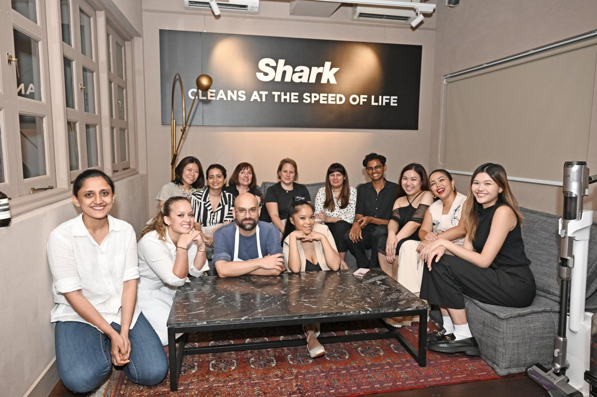
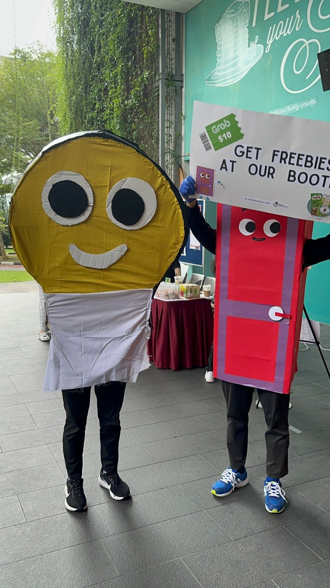
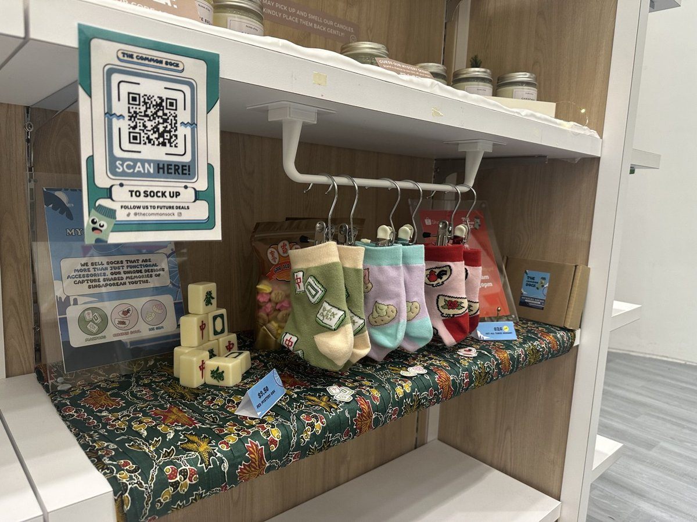
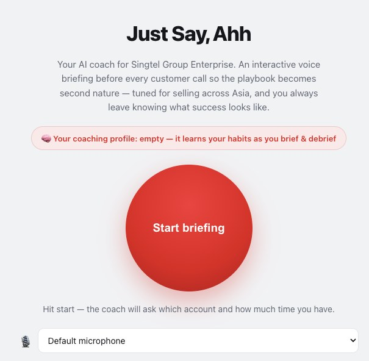
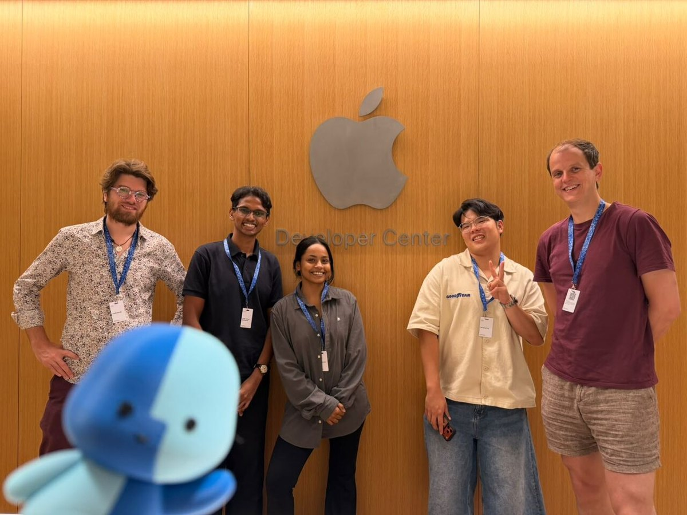
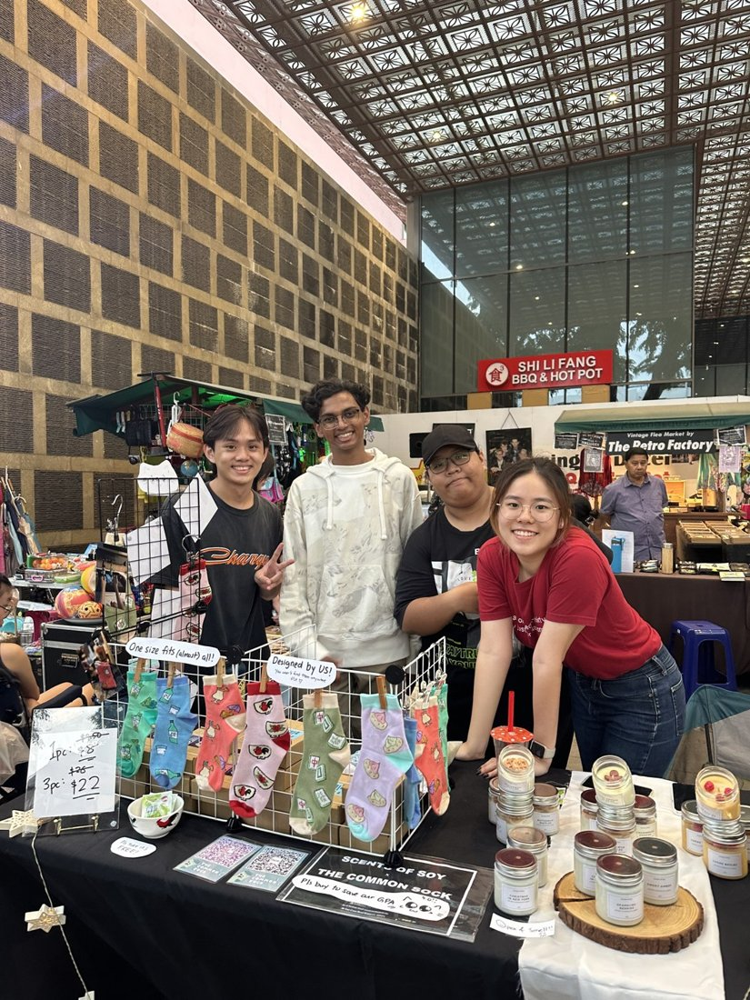

Interdisciplinary Problem Solver
I blend my background in digital marketing with Politics, Law & Economics to solve tough problems with different lenses.
I’m Joshua, and I blend strategy, storytelling and AI to solve problems where trust matters.
About
I'm Joshua, your go-to human for solving complex business problems with tech. I work at the intersection of policy, technology, and human experience.
With 2+ years of internship experience from digital marketing to AI transformation and law, I bridge the gap between technical teams and the non-technical audiences they build for.
When I'm not at my desk, you'll find me going for long runs, taking pictures at the latest museum exhibition, or starting events that bring communities together.
I blend my background in digital marketing with Politics, Law & Economics to solve tough problems with different lenses.
I'm actively involved in AI Hackathons, Innovation Challenges, and Demo Sessions to keep sharp and meet other passionate builders.
Organiser of networking and skill workshops for early career professionals looking to sharpen their AI skills.
Awarded SMU's premier undergraduate scholarship to study Politics, Law, & Economics (Bachelor of Social Science).
Selected work

Project managed SharkNinja's PR launch for the Shark HydroVac and Ninja Blast at Appetite, the sister restaurant of Michelin-starred Nouri.

A digital and physical awareness campaign with MSF, helping people recognise domestic violence and know how to report it.

A sock brand I helped build from scratch: custom designs, a school retail display and a Shopee store.

A voice AI coach that briefs sales reps before every customer call, built for Singtel Group Enterprise. Winner at the GTM Builders AI Build Lab, Singapore.

A spatial note-taking app for Apple Vision Pro that lets you pull physical notes into your digital space.
Side quests
Contact
Have a project, an idea, or just want to say hello? My inbox is open.
SharkNinja's launch of the Shark HydroVac Wet & Dry Cordless Vacuum and the Ninja Blast Portable Blender.
I served as project manager for SharkNinja's MadeForYou PR Launch, held on 30th April 2024. The event took place at Appetite, the sister restaurant to the Michelin-starred Nouri, and showcased the newly released Shark HydroVac Wet & Dry Cordless Vacuum and the Ninja Blast Portable Blender.
Hands-on activities gave guests a first-hand look at how you can achieve cleaner homes, prepare Michelin-quality meals, and craft delicious smoothies and cocktails on the go with the latest product innovations.
The brief was to turn everyday household cleaning and food preparation products into an experience that was engaging in the room and compelling to capture on social media.
The launch also had to bring many stakeholders together, including the PR agency, the event venue, logistics partners and the SharkNinja team, and keep all of them aligned to one fixed timeline.
A campaign built in collaboration with the Ministry of Social and Family Development (MSF).
Breaking the Silence is the Ministry of Social and Family Development's public awareness campaign on domestic violence. It helps people recognise the signs of abuse, understand that domestic violence is not a private matter, and know how and where to report it.
Our team created a blended campaign: a digital presence supported by a physical booth, so people could engage with the message both online and in person.
Domestic violence is a deeply sensitive subject. The campaign had to be engaging enough to draw people in, while staying careful and respectful at every step. Every message, visual and interaction needed to reflect how serious the issue is, without becoming heavy to the point that people looked away.
I oversaw much of the design of the campaign materials and kept the team working together across the digital and physical sides of the campaign, from the social media content to the booth and its handmade mascots.
Shopee Sales & Business Creation: building a sock brand from the first design to the first sale.

The Common Sock sells socks that are more than functional accessories. Our designs capture shared memories of Singaporean youths.
We built the brand from the ground up: a working business with its own name, designs, suppliers, storefront and customers, taking it from an idea to real sales.
Starting a product business from nothing. With no existing brand, audience or supply chain, we had to brainstorm and decide everything ourselves, from what to sell and how it should look to how to produce it, ship it and get the first customers.
A voice AI coach that briefs sales reps before every customer call.
Just Say, Ah! is an AI coach for Singtel Group Enterprise. Before every customer call, the rep has an interactive voice briefing so the playbook becomes second nature. It is tuned for selling across Asia, and reps leave knowing what success looks like. It won the Singtel Category at the GTM Builders AI Build Lab in Singapore.
Sales reps often walk into customer calls with a long playbook they have only half absorbed. The challenge was to build a tool that prepares them quickly and well, fits how Singtel Group Enterprise sells across Asia, and works in the short time a hackathon allows.
I worked on both the software and the product. We built the coach as a voice agent on Vapi, a voice AI platform that handles live two-way speech, so reps can talk through a briefing instead of reading one. A large part of the work was deciding what the coach says: turning the sales playbook into short spoken briefings that show what a good call looks like.
A note-taking app for Apple Vision Pro that pulls your physical notes into your digital space.
Built at Apple Spatial Hack 2026, this is a spatial note-taking app for Apple Vision Pro. It allows users to pull physical notes into their digital space.
Handwritten notes are hard to carry into digital tools, and flat screens lose the way people naturally lay out ideas around them. The challenge was to bring physical notes into Apple Vision Pro so they can be arranged in space, within the limited time of a hackathon.
As product manager and project coordinator, I shaped the concept, kept the team aligned on scope and timing, and prepared and delivered the demos. We gave five demos in total, which let us test the idea with real people and improve it as we went.
Helping early career builders navigate AI well.
tAIste Labs helps early career builders navigate AI well. It is a community for early career professionals in Singapore who build with AI, where members can bounce ideas off each other, share what they are making and learn together.
Early careers are building with AI, but they need a community to build with taste: a place to bounce off ideas, get honest feedback and learn what good looks like.
We are creating the most tasteful events in tech, from café sessions where members share what they are building to networking evenings for the community.
As founder, I handle the programming, the partnerships and the growth of the community.